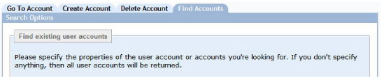
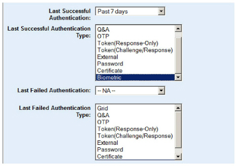

|
IdentityGuard Server 13.0 Administration Guide |
|
IdentityGuard Server 13.0 Administration Guide |
To find users by last authentication
1. Log in to the Administration interface
2. In the main menu, click User Accounts.
The User Accounts page appears.

3. Click the Find Accounts tab.
4. Specify as many of the search options as necessary to reduce the search results to the exact records you need.
Note: To use this search, the policy that allows storage of last authentication data must be enabled. This policy is enabled by default. See Authentication Types policies, "Store Type and Date of Last Authentication" for details.
5. To find users (or administrators) by their last successful authentication date, select the time interval from the Last Successful Authentication drop-down list.
You can choose to search for the last successful authentication within the time interval. You can also choose to look for users who have not authenticated successfully within the selected time period.
If you do not select any authentication types, the search results will include the last successful authentications of any authentication type.

6. To find users by their last successful authentication type, select one or more authentication types from the Last Successful Authentication Type selection list.
7. To find users by the date of their last failed authentication, select the time interval from the Last Failed Authentication drop-down list.
You can choose to search for the last failed authentication within the time interval. You can also choose to look for users who have not failed authentication within the selected time period.
If you do not select any authentication types, the search results will include the last failed authentications of any authentication type.
8. To find users by the authentication method used for their last failed authentication, select one or more authentication types from the Last Failed Authentication Type selection list.
9. To specify how many search results are displayed per page, select a number from the Showing results per page drop-down list.
10. Click Find Accounts.

The Search Results page displays all users that match your search criteria.
Note: You
can change the sort order of records in the Search
Results page. Click any column header to sort records by the
values in that column.
Only the entries on the current page are sorted; if there are multiple
pages of search results, only the one you are viewing is sorted.